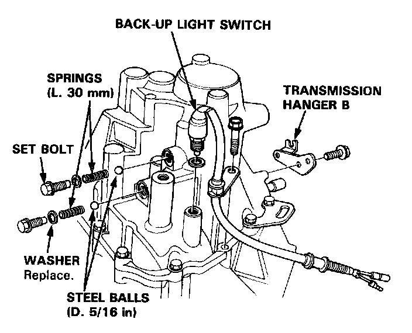
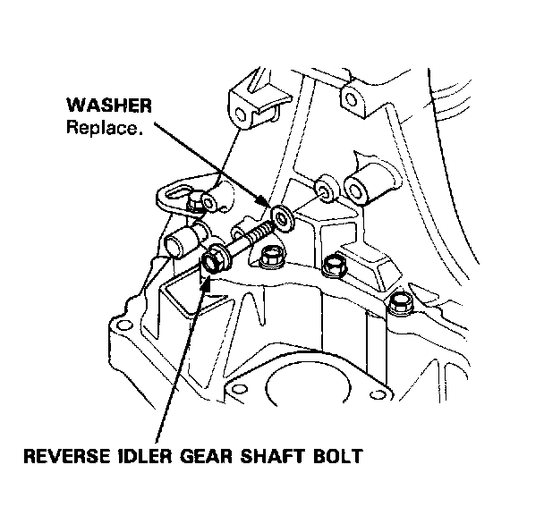
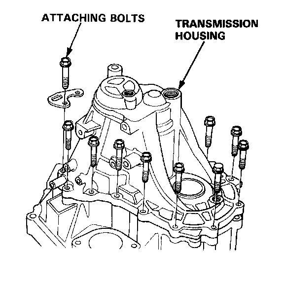
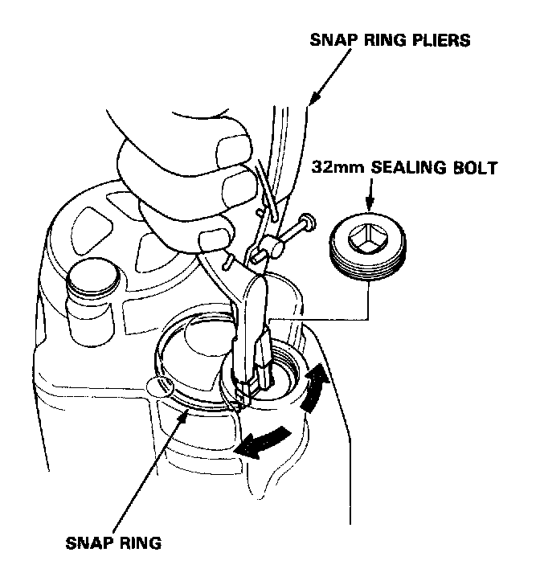
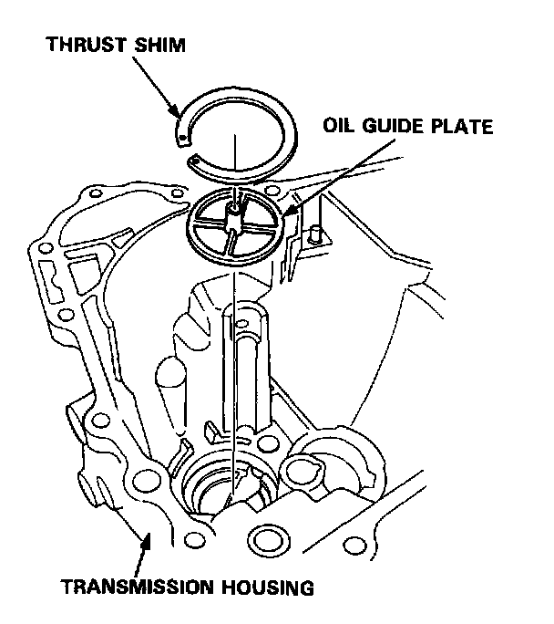
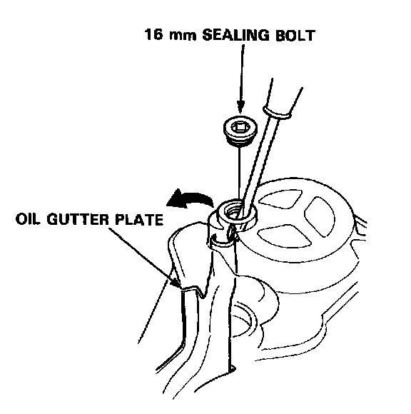

Case: Service and Repair
Transmission Housing RemovalNOTE: Place the clutch housing on two pieces of wood thick enough to keep the mainshaft from the hitting the workbench.
1. Remove the back-up light switch.
2. Remove the transmission hanger B.

3. Remove the set bolts, springs, and steel balls.

4. Remove the reverse idler gear shaft bolt.

5. Remove the transmission housing attaching bolts in a criss-cross pattern in several steps.

6. Remove the 32mm sealing bolt.
7. Expand the snap ring on the countershaft ball bearing and remove it from the groove using a pair of snap ring pliers.
8. Separate the transmission housing from the clutch housing and wipe it clean of the sealant.

9. Remove the thrust shim and oil guide plate from the transmission housing.

10. Remove the 16 mm sealing bolt, then remove the oil gutter plate.